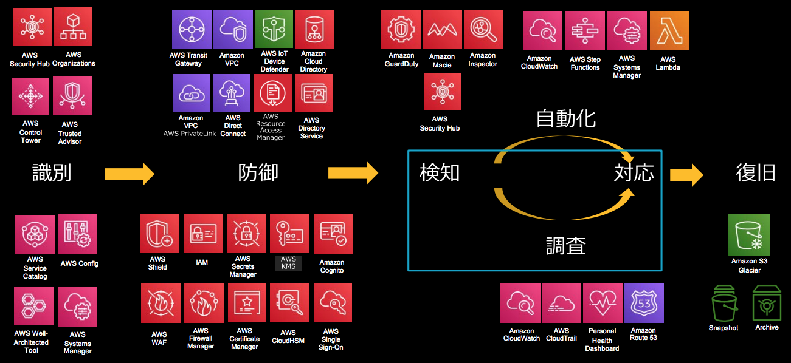
AWS 環境におけるセキュリティインシデントの調査・対応⽅法
Ref.
アクセスコントロール
IAM
認証情報レポート (Credential Reports)
信頼ポリシーの外部 ID (External ID)
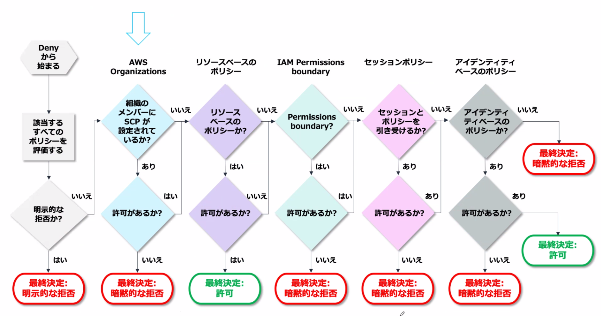
NotPrincipal, NotAction, NotResouce
NotPrincipal は Effect: Deny で使用。他の全プリンシパルが許可される Allow で使用すべきでない。
信頼ポリシーに aws:MultiFactorAuthPresent を指定して MFA 必須に。
AWS Organization
SCP (Service Control Policy)
- OU, 各アカウント単位でアタッチ
- OU 階層に従って継承される
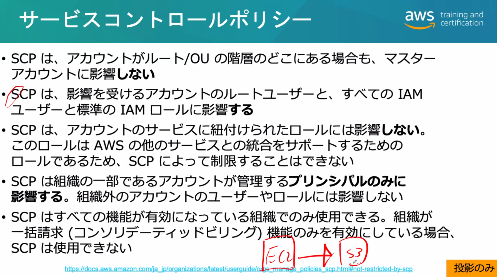
統合サービス
- CloudTrail の組織証跡
- AWS Config アグリゲータとの統合
- Firewall Manager との統合
- CloudWatch Event Bus
- AWS SSO
- AWS Security Hub
- AWS Control Tower
インスタンスの保護
EC2
AWS Systems Manager
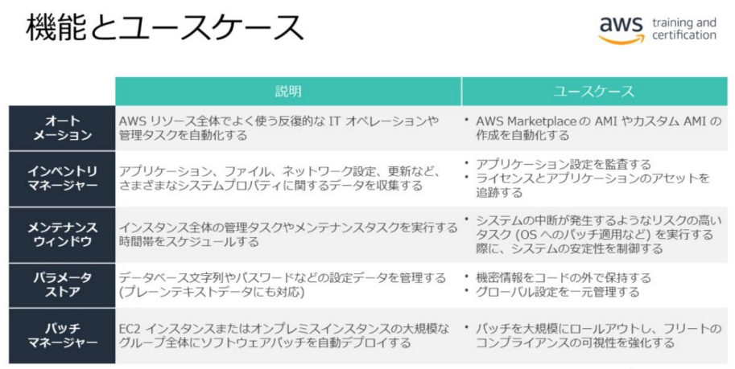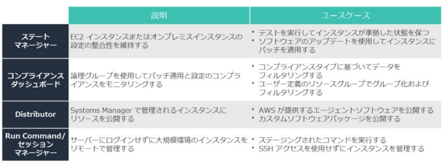
ELB に ACM で証明書をデプロイする。
TLS オフロードでターゲットでの TLS による負荷・運用コストをなくす。
ALB で Cognito ユーザプールと連携してユーザ認証を行う。
VPC
独自 DNS サーバの使用
- VPC の DHCP オプションセットで設定。
VPC フローログ
- VPC, サブネット, ENI 単位で設定にしてトラフィック情報を取得。
VPC トラフィックミラーリング
- VXLAN, 4789/udp
AWS Network Firewall
AWS Gateway Load Balancer
- これらは ENI ベースなのでセキュリティグループによる制御が可能
VPC エンドポイント
- ゲートウェイエンドポイント
- インターフェイスエンドポイント (PrivateLink)
- エンドポイントポリシー
AWS Managed VPN
AWS Client VPN
- クライアント VPN エンドポイント
Direct Connect
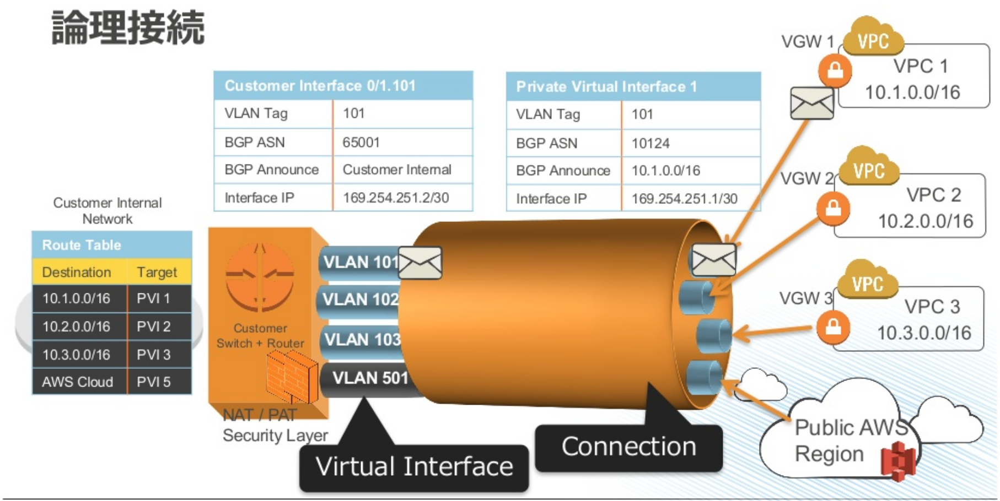
- パブリック接続
- パブリック VIF で AWS サービスに接続。
- カスタマールータでパブリック IP と NAT が必要。
- VPN over Direct Connect
Direct Connect Gateway
- Direct Connect から別リージョンの VPC に接続するためのゲートウェイ。
AWS Transit Gateway
- VPC 同士や Direct Connect や VPN 接続をスター型接続で中継するゲートウェイ。
ネットワーク保護
AWS: Security: WAF, Shield, CloudFront, Route 53
CloudFront
- オリジンの保護
- トランスポート暗号化: ビューア → エッジ間/エッジ→ オリジン間
- 署名付き URL/Cookie
- フィールドレベル暗号化 (Field-Level Encryption)
Route53
WAF
- Web ACL, ルール, ルールグループ
Shield Advanced
- EC2(ENI), ELB, CloudFront, Route 53 と統合された高度な検出。
- AWS WAF が無料。L7 は WAF で対策。
AWS Firewall Manager
インテグレートされたサービス
WAF
- CloudFront, ALB, API Gateway
- Firewall Manager
Shield Advanced
- CloudFront, ALB/NLB, Route 53
ACM
- CloudFront, ALB/NLB, API Gateway
データ保護: ストレージの保護
AWS: Security: S3, Glacier, RDS, DynamoDB
ACL, オブジェクト所有者
SSE-C: PUT/GET 時に HTTP ヘッダで AES-256 キーを渡す。
MFA Delete: オブジェクトバージョンの削除とバージョニング無効化に MFA を要求。
オブジェクトロック
- バケット作成時に有効にする
- ガバナンスモード、 コンプライアンスモード
クロスリージョンレプリケーション
- 非同期レプリケーション。ディザスタリカバリ。クロスアカウント可。
S3 アクセスポイント
- アクセスポイントポリシーをアタッチできるパブリックエンドポイントを作成。
迅速(Expedited)取り出し: 通常 1～5 分
Glacier Vault
ボールトロックポリシー
DynamoDB の暗号化
- デフォルトで AWS 所有キーで SSE-KMS 暗号化。
- AWS 管理キー、カスタマー管理キーも指定可。
DynamoDB グローバルテーブル
- DynamoDB ストリームを利用したマルチリージョン・マルチマスターのレプリケーション。
データ保護: 暗号化
AWS: Security: KMS, Secrets Manager, ACM
KMS
非対称データキーペア
データキーのクロスリージョン共有: データキーを別リージョンの CMK で暗号化して渡す。
マルチリージョンキー
AWS Encryption SDK
カスタマー管理キー、AWS 管理キー 、AWS 所有キー
Encryption Context
ScheduleKeyDeletion: 最短7日、デフォルト30日かかる。
カスタムキーストア
- 自前で VPC 内に立てる CloudHSM クラスターで CMK を保持。
- FIPS 140-2 レベル 3 認定
AWS CloudHSM
AWS Secrets Manager
Parameter Store
ACM 証明書
ACM PCA
ロギング・モニタリング・レスポンス
AWS: Security: Governance, Incident Response
公開リソースの確認
Trusted Advisor のセキュリティチェックで IAM 設定、セキュリティグループ、パブリックバケットを確認。
IAM Access Analyzer でリソースベースポリシーで外部共有されているリソースを確認。
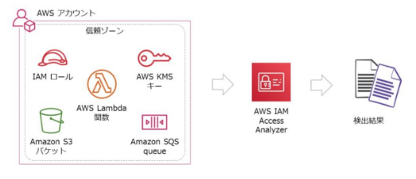
S3 Access Analyzer でパブリックバケットや共有バケットを確認。
ロギング
| 種類 | 保管・送信先 | 備考 |
| CloudWatch Logs | ログストリーム, S3(手動エクスポート) |
EventBridge でスケジュール実行した Lambda による Export API 実行や、サブスクリプションフィルター+Firehose で S3 への保存の自動化が可能。 |
| CloudTrail | S3, CloudWatch Logs(オプショナル) | |
| VPC Flow Logs | S3, CloudWatch Logs | VPC 内のトラフィックログ。 |
| DNS ログ | S3, CloudWatch Logs, Kinesis Data Firehose | Route 53, VPC Route53 Resolver の DNS クエリログ。 Route 53 は CloudWatch Logs のみ。 |
| S3 サーバアクセスログ | S3 | |
| ELB アクセスログ | S3 | |
| Web ACL トラフィックログ | Kinesis Data Firehose, S3, CloudWatch Logs |
|
| CloudFront アクセスログ | S3 |
CloudTrail
CloudTrail で API 操作, サインイン試行をロギング。
証跡としてログを S3 バケットに保管。オプションで CloudWatch Logs に送信。
リアルタイム処理には CloudWatch Events で CloudTrail をイベントソースとしたルールを使用。
ログは SSE-KMS とダイジェストファイルで保護される。
中央アカウントのバケットへマルチアカウントのログ統合。
Organizations を使用しているなら組織証跡が使える。
CloudTrail Insights でリソースを変更する API 操作の異常検知。
CloudWatch Logs
CloudWatch Logs で Lambda やインスタンスのログ収集。
CloudWatch エージェントでサーバのログ収集。
CloudTrail, VPC フローログ, DNS ログ, Web ACL トラフィックログも収集できる。
ログ保管コストを下げるため、S3 へ手動エクスポート。
メトリクスフィルタで CloudWatch アラーム連携。
サブスクリプションフィルタで Kinesis, Lambda によるリアルタイム処理。
CloudWatch Logs Insights のダッシュボードでログのクエリと可視化。
ログの処理
Kinesis でログをリアルタイム処理、S3, Redshift, Amazon ES 等に保管して分析。
Data Stream で EC2・Lambda でカスタマイズされたデータ処理・送信を行うコンシューマを実装。
Data Firehose でコンシューマ不要で S3, Redshift, ES, Splunk に送信。
- バッファリング設定に基づきバッファリング・連結。S3 でスケールしない場合等に使用。
- バッチで非同期に呼ばれる Lambda 関数でデータ変換も可能。
Kinesis エージェントでサーバのログファイルを Kinesis に自動送信。
CloudWatch Logs を取り込むにはサブスクリプションフィルタを使用。
Data Analytics で SQL によるリアルタイムのストリーム処理を Data Stream/Firehose に挿入。
ログ分析
Athena で S3 に保管されたログを SQL で分析。
- AWS Glue が S3 バケットをクローリングしデータカタログを作成。
- インメモリ BI ツール QuickSight 連携でダッシュボード表示も。
- 暗号化された S3 ログも分析可能。
Amazon ES に保管されたログを Kibana でダッシュボード表示。
モニタリング・レスポンス
CloudWatch メトリクスでインスタンスの CPU 状態や Lambda のエラー回数などを監視。
メトリクスにしきい値を設定し、CloudWatch アラームを発生させる。
アラームから SNS 通知、EC2 アクション実施、Auto Scaling 連携。
SNS でメール送信や Lambda 関数コールを実施。
CloudWatch Events で CloudTrail, AWS Config 等のイベントソースとターゲットを指定したルールを設定。
ターゲットは Lambda, SNS, SQS など多くのサービスと連携。レスポンス自動化。
クロスアカウントの CloudWatch Event Bus をターゲットにしたイベント送信。
AWS Config でリソース作成・変更の履歴とスナップショットを S3 バケットに保管。
- リソース作成・変更、Config ルール検出の SNS 通知も可能。
- 設定変更しか分からないのでリソースに対しどこからどんな API 操作が行われたか等を調査するには CloudTrail ログ+Athena を使う。
AWS Config ルールによるコンプライアンス違反の検出。
- 修復アクションで Systems Manager Automation ランブックを実行。
- CloudWatch Events 経由で Lambda 関数で実装された修復や通知の実施。
- ベストプラクティスを集めたコンフォーマンスパック。
Config アグリゲータでマルチアカウント/マルチリージョンの集計結果を中央アカウントに集約。
Amazon Inspector でインスタンスの脆弱性・セキュリティレポートを生成。
- apt, Windows Installer でインストールされたソフトウェアのバージョンと CVE 等を照合。
- 評価テンプレートでスケジュール、ルールパッケージ、SNS トピックを指定。
- ルールパッケージは CVE, CIS, ベストプラクティス, ネットワーク到達可能性ルール。
Amazon Macie で S3 のセキュリティ監視。
- S3 オブジェクトと CloudTrail のアクセスパターンから機械学習で脅威検知。
- PII や知的財産などの機密データの検出。
- ダッシュボード表示と CloudWatch Events のトリガー。
Amazon GuardDuty で脅威検知。
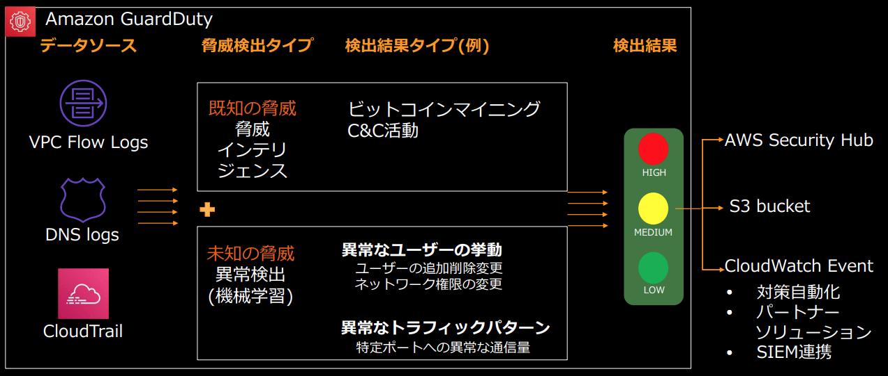
CloudWatch Events 経由で Lambda による対応アクション (インスタンス隔離等)
独自の脅威インテリジェンス・IP セーフリストをアップロードすることも可能。
S3 Protection で S3 への脅威検知も対応。
Amazon Detective のダッシュボードでインシデント調査。
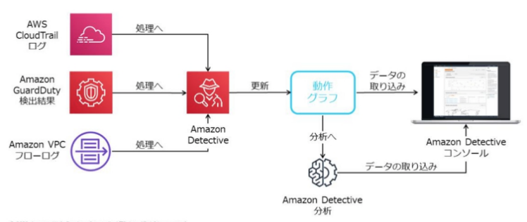
- マルチアカウントのアクティビティログを集約。
- GuardDuty 有効化が必要。
Security Hub で組織アカウント横断で検出結果を統合。
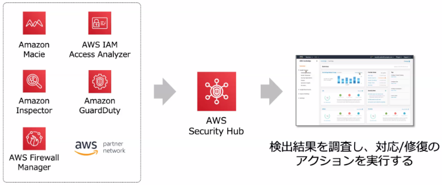
- Firewall Manager により WAF, Shield Advanced, セキュリティグループの検出も統合される。
- AWS Config のコンフォーマンスパックのコンプライアンスチェックも継続的に実施。
- CloudWatch Events 経由でレスポンス自動化。
DDoS シミュレーションは Shield Advanced で保護されたリソースを対象にAWS DDoS テストパートナーに実行される必要がある。
ペネトレーションテストは8つのサービスを対象に実施可能。
- VPC 内インスタンス: EC2 インスタンス, NAT ゲートウェイ, RDS, Aurora
- Web: ELB, CloudFront, API Gateway, Lightsail, Elastic Beanstalk
- Lambda/Lambda Edge 関数
サーバレス
AWS: Security: API Gateway, Lambda
API Gateway
エッジ最適化エンドポイント (デフォルト)
- CloudFront レイヤーでの地理的分散による DDoS 緩和。
リージョン API エンドポイント
- ユーザ管理の CloudFront で WAF/Shield Advanced による保護が可能
プライベート API エンドポイント
- 特定 VPC だけに API 公開。
- VPC エンドポイントポリシーも併用可能。
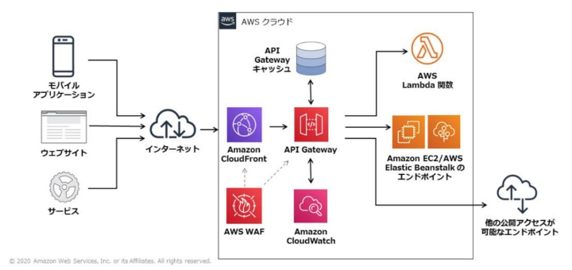
WAF を API のステージ毎に設定できる。
リソースベースポリシーによるアクセスコントロール
- プリンシパル、IP アドレス(範囲/CIDR)、VPC の制限。
- URL パスとメソッドの組み合わせを ARN で参照して制限。
実行ロール
- API の実行ロールで統合バックエンド (Lambda 等) を呼び出す権限を指定。
スロットリング・キャッシュによる DDoS 緩和。
カスタムドメイン
- 証明書設定と ACM による管理。
ユーザ認証: オーソライザー
-
IAM アクセス権限:
- ID 連携等で IAM クリデンシャルを持つユーザの認証・認可。
-
Cognito オーソライザー:
- Cognito ユーザープール連携。
- 独自ユーザーアカウントやフェデレーションユーザへの API 認証。
-
JWT オーソライザー
- OIDC/OAuth 2.0 IdP 連携。
-
Lambda オーソライザー
- リクエスト、トークンをチェックする独自認証。
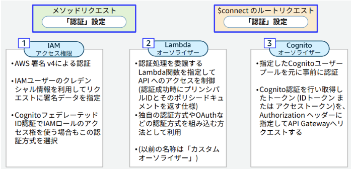
VPC リンク
- 統合バックエンドの1つ。VPC の NLB をバックエンドとする。
ログ
- ステージ/メソッド単位で CloudWatch Logs のロギングを有効化。
- 実行ログとアクセスログ
Lambda
トリガーと IAM ポリシー
- イベントソース (プッシュモデル): 関数ポリシーでソースとなるサービスを許可。
- プルモデル(ポーリング): 実行ロールにソースへのアクセス許可が必要。
- Request-Response モデル: 直接呼び出し。
環境変数の暗号化
- デフォルトで AWS 管理キーで暗号化。関数が呼び出されると復号される
- 伝送中の暗号化のためのヘルパー: Lambda 関数内で復号を実装する。
VPC アクセス
- 関数から VPC にインターネット経由せずにアクセス。
- セキュリティグループを設定する。
- インターネットアクセスは不可 (IGW に ENI が登録されない)

Lambda@Edge
- レガシーアプリケーションに HTTP セキュリティヘッダーを追加するというユースケース
認証・ID 連携・SSO・AD
AWS: Security: Cognito, STS ID 連携, SSO, AD
Cognito
| Service | User Identity | Credential |
| ID プール | Cognito ID | STS 一時クリデンシャル |
| ユーザプール | ユーザディレクトリのユーザID | API トークン (JWT) |
Cognito ID プール
外部 IdP での認証でアプリに AWS サービスの利用を許可する。
- STS ID フェデレーションの置き換え。
ID プールは渡された外部 IdP のトークンを検証し一時クリデンシャルを発行する。
未認証 ID (ゲスト) をサポートする。
GetCredentialsForIdentity
- IdentityID と Logins (IdP の URL とトークンのマップ) を渡して一時クリデンシャルを取得する。
- GetOpenIdToken と AssumeRoleWithWebIdentity を一緒にやってくれる。
Cognito ユーザープール
ユーザープールでアプリの認証とユーザ情報の管理を実装する。
API トークン (JWT) を発行する OIDC IdP のマネージドサービス。
認証に MFA も利用できる。
アダプティブ認証: リスクレベルに応じて MFA を要求したりブロック・メール通知できる。
API Gateway, AppSync, ALB へのアクセスに認証を追加できる。
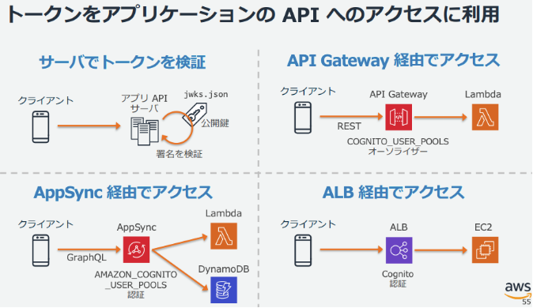
ソーシャルサインインや SAML(=ADFS), OIDC の IdP など複数の認証方法が併用できる。
アプリ内でログイン画面を実装するか、ユーザプールのログイン画面 (Hosted UI) を表示できる。
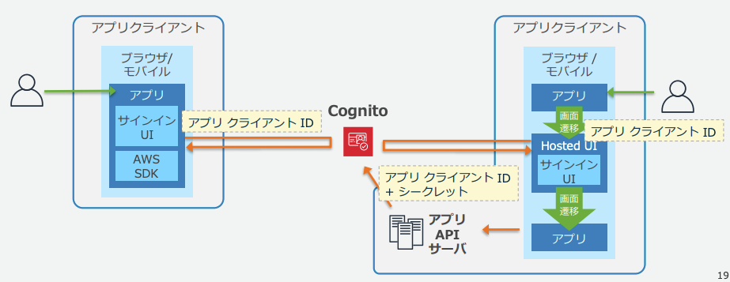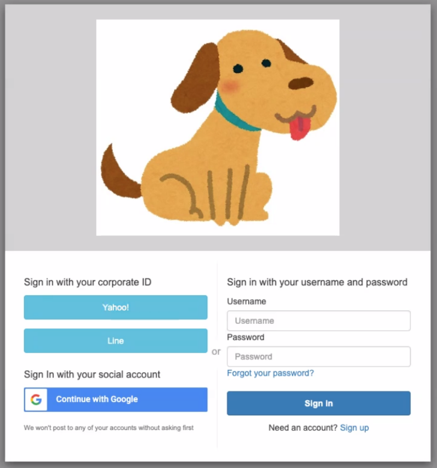
ユーザープールのトークンで ID プールから一時クリデンシャルを取得することもできる。
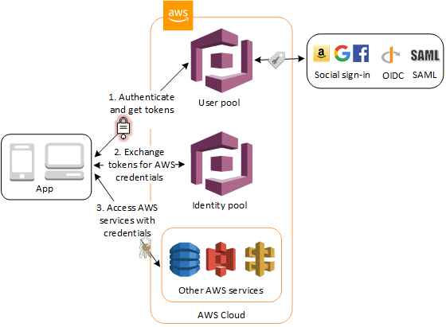
STS
GetSessionToken
- STS に MFA 認証を依頼し、MFA-protected な API 呼び出しに使う一時的クリデンシャルを取得する。
GetFederationToken
- カスタム ID ブローカーに設定された IAM ユーザの一時クリデンシャルを取得する。
AssumeRoleWithSAML
- SAML 2.0 対応の IdP との ID フェデレーション。
AssumeRoleWithWebIdentity
- Open ID Connect (OIDC) 互換 IdP との ID フェデレーション。
AWS SSO
SAML 2.0 IdP のマネージドサービス。
SAML 2.0 をサポートする 各種 SaaS のSP にシングルサインオン。
- Office 365, G-suite, Slack, Box, Salesforce
ID ディレクトリ
- AWS SSO 組み込みディレクトリ
- AWS Directory Service 統合
- オンプレ AD 統合:
- AWS Managed Microsoft AD でオンプレ AD ドメインと信頼関係を構成
- AD Connector によるログイン転送
AWS Directory Service
Simple AD
- Samba v4 の Active Directory Compatible Server のマネージドサービス。
- ドメインの信頼関係の設定はできない
AWS Managed Microsoft AD
- Windows Server 2012 R2 上の AD によるフル機能 AD のマネージドサービス。
- オンプレ AD ドメインとの信頼関係の構成: オンプレのドメインアカウントで Windows インスタンスにログインしたり、ロールと紐付けたりが可能。
AWS Directory Service AD Connector
- AWS 環境からオンプレのドメインコントローラに通信をリダイレクトするプロキシサービス。
- AD のグループ・ユーザを IAM ロールにマッピングしてアクセス権を与えられる？
AD 連携
AWS 管理コンソールへの SSO
-
ADFS と AWS サインインエンドポイントで SAML 認証により管理コンソールへ SSO。
- エンドポイントが背後で AssumeRoleWithSAML でクリデンシャルを取得。
-
AWS 管理コンソールの IAM 設定で ID プロバイダとして ADFS を追加する。
- この際 AssumeRoleWithSAML を許可するロールを関連づける。
-
ユーザが組織内の ADFS サインオンページをブラウズすることでフローが開始する。
- 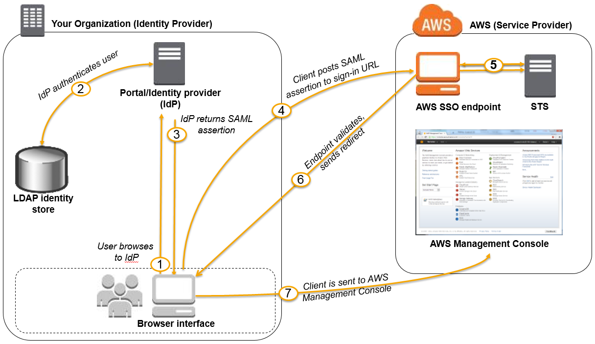
Cognito ユーザープールと ADFS の SAML 連携
API Gateway や ALB でドメインアカウントで認証が可能。
- SAML IdP で Cognito ユーザープールを Relying Party として設定。
- Cognito ユーザープールに SAML IdP と属性マッピングを登録。
- Hosted UI から ADFS にリダイレクトして認証。
AWS Managed Microsoft AD
- オンプレ AD ドメインとの信頼関係を構成
- オンプレのドメインアカウントで Windows インスタンスにログイン
- ロールと紐付けて AWS のサービスにアクセス
AWS Directory Service AD Connector
- VPC の Windows インスタンスに AD Connector をドメインコントローラとして登録。
- 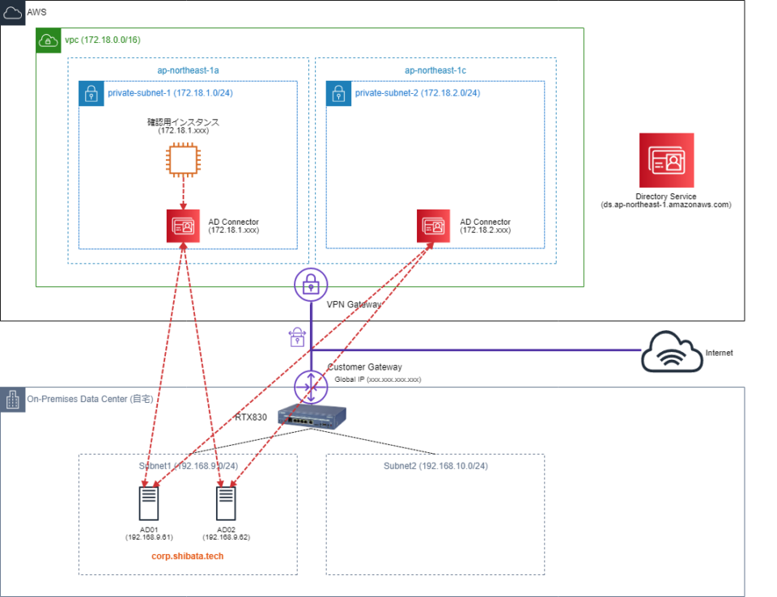
AWS SSO で各種 SaaS やサービスにドメインアカウントでサインオン
- SSO の ID ディレクトリから AD Connector でログイン転送する
- SSO の ID ディレクトリとして AWS Managed Microsoft AD を使用、オンプレ AD ドメインと信頼関係を構成
セキュリティガバナンス
AWS: Security: CloudFormation, Service Catalog, Control Tower
CloudFormation
テンプレートに機密情報を埋め込まない
- Parameter Store や Secrets Manager で管理されている外部値を参照する。
スタックポリシー
- 指定リソースに対して実行できる更新アクションを記述した ポリシードキュメント。
- 重要なスタックリソースを意図しない更新から保護
DeletionPolicy 属性
- スタックが削除される時にリソースを保持または (場合によっては)バックアップする指定。
AWS Service Catalog
セキュリティ管理者が提供する CloudFormation テンプレートをエンドユーザが自身で制約のもとでプロビジョンする。
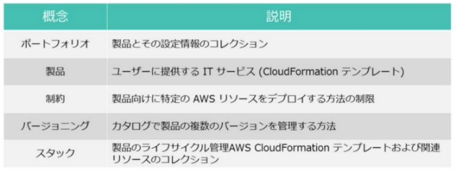
-
テンプレート制約
- CloudFormation テンプレートのパラメータを制限。
-
起動制約
- 製品からリソースをプロビジョニングする際に使用するロールを指定。
AWS Control Tower
マルチアカウント管理の問題を解決する Landing Zone を適用するサービス。
アカウントの各種設定、監査ログ集約、ガードレールなどのデプロイを自動化。
SCP (予防的ガードレール) と Config Rules (発見的ガードレール)。
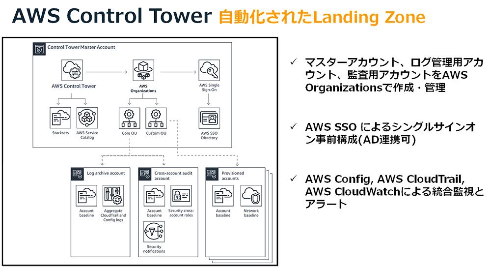
AWS Artifact
- AWS インフラストラクチャとサービスのコンプライアンスレポートをダウンロードするサービス。
- ISO、PCI、SOCなどの第三者による監査レポートをダウンロードできる。
AWS Audit Manager
- 監査証跡を自動収集。
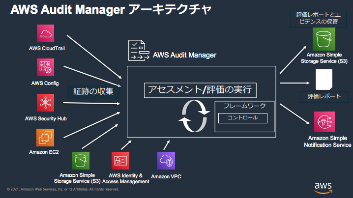
クロスアカウント
AssumeRole
Organization
S3 クロスアカウントレプリケーション
CloudTrail 証跡
CloudWatch Logs サブスクリプションフィルター
- サブスクリプションフィルターにクロスアカウントの Destination を設定する。
- https://aws.amazon.com/jp/premiumsupport/knowledge-center/kinesis-firehose-cloudwatch-logs/
CloudWatch Event Bus
CloudWatchクロスアカウントクロスリージョン設定
- CloudWatch メトリクス、アラーム、ダッシュボードを1つのアカウントにまとめる
AWS Config アグリゲータ
GuardDuty 管理者アカウントによる管理と検知の集約
AWS Security Hub 組織アカウント横断で各種セキュリティサービスの検出結果をダッシュボード表示。
Amazon Detective のマスターアカウントにデータ集約
AWS Secrets Manager
Parameter Store
CloudFormation スタックセット
- マルチリージョン、マルチアカウントでリソースをデプロイ。
AWS Control Tower: Landing Zone (アカウント設定)、監査ログ集約、ガードレール